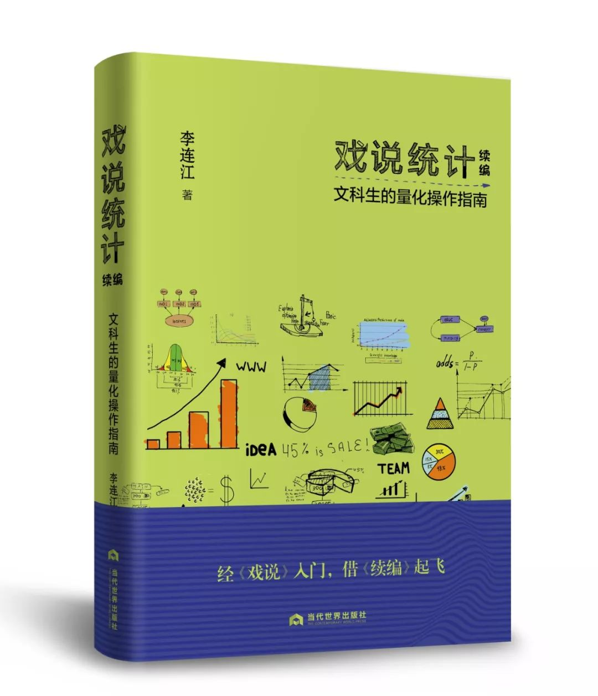
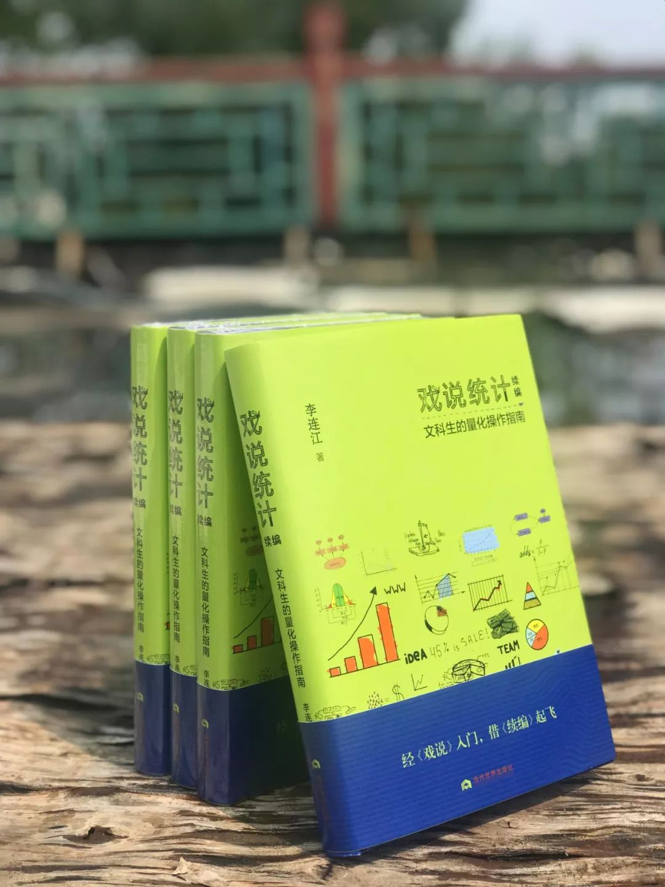
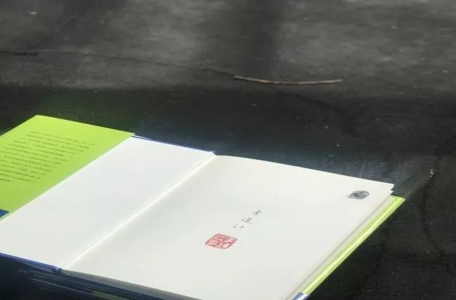
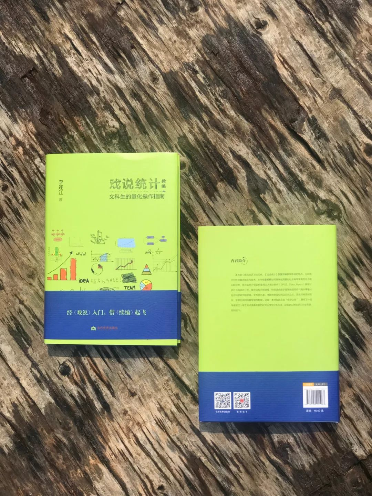
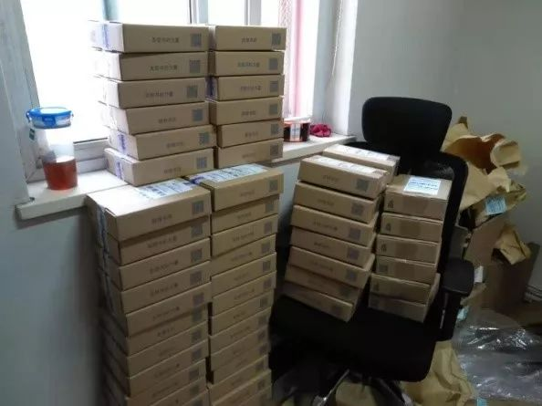
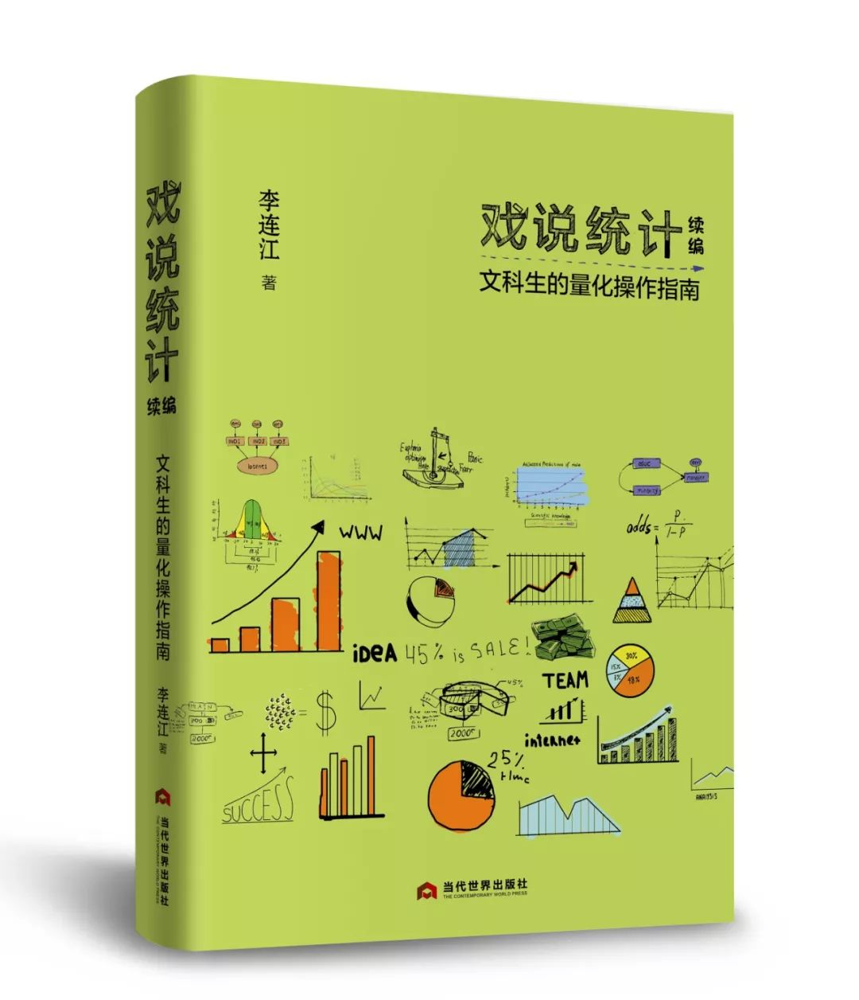
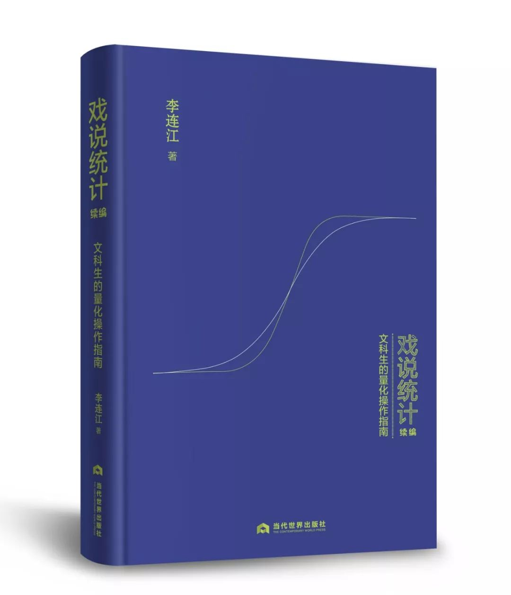

收录于合集

《戏说统计续编： 文科生的量化操作指南》 李连江 著 当代世界出版社 2019年版
齐白石老人曾说过这样一句话——“我难，你不难。”什么意思呢？这要从一段轶事开始说起。
白石老人的弟子李苦禅先生向师父请教作画、制墨、治印以及做印泥的诀窍，白石老人对大弟子从不藏私，倾囊相授。传授前，老人有句口头禅：“我难，你不难。”他的意思是：我摸索这些诀窍，很难；跟你一说，你就懂了，就会了，你不难。
这个故事，李连江老师常常提到。在《戏说统计续编》中，他这样写道：“白石老人这五个字总结了师生正道。统计学术语晦涩，公式像天书，我学得十分辛苦，像爬泥泞滑坡，走陡峭山路。我在独自摸索过程中折了几根树枝，权当登山杖。视频与书就是这几根树枝的化身，我希望用‘我难’在一定程度上换取读者的‘不难’。”
所谓好老师，不外乎言传身教，让你少走弯路而已。而所谓好作者，亦不外乎让你感同身受，有所领悟罢了。从《戏说统计》到《戏说统计续编》，为了这一个“难”能变成“不难”，李老师在这条崎岖小道上摸索了三十余年。
李老师1963年出生于河北，用他自己的话说自己是“五谷能分，四体不勤。手无缚鸡之力，少年常为生存担忧”，1978年大学重开，他成为78级的一员，此后四十一年，他辗转五所大学，五次变换身份，十年前落户香港中文大学，兼职华政、南开与浙大。在将近三十年的执教生涯中，李老师在政治学、社会学、哲学、统计学等领域中一直潜心探索，为学生授业解惑，积累了许多经验和心得，也走过许许多多弯路。
▲ 李连江老师 在《戏说统计续编》的附录《我讲统计》中，他讲述了自己自学统计以及后来教授统计课的往事：
1978年我考大学，报的是文科，数学不及格。到底是得了59.3分还是59.7分，不记得了。……我们学了一学期微积分。其他同学大约本来就会，或者是学会了，不过我没学会。……到第二个学季，我开始觉得统计好像没那么复杂，多花点时间就能学会。所以，第二、第三学季，成绩都是A。
不懂就想办法学。我有个弱点，就是不愿意跟人家请教，喜欢自学，难免走很多弯路。不过，走弯路也有好处，就是避免了很多难为情的时刻。
我学统计是学以致用，教统计则纯属偶然。系里有位老师善于尝新，开了不少新课。开了新课后他先教，教两年就没兴趣了，不教了。统计课就是他尝新的果子。他不教了，其他老师教不了，可是这门课已经被列为学生必修课。于是系里就请兼职教师讲，教学效果不好，学生意见很大。正好我急于摆脱一门无聊的课，就向系主任自告奋勇讲统计。一开始教，我就发现我的自学方式有个优点，学生可能走的弯路我基本上都走过。我有个优点，对当教师很重要，就是记忆力不错，我能记得哪里有弯路，哪里有陷阱。我教统计时很小心地提醒学生，这个地方有陷阱，那个地方要转弯。



专家讲统计分析，学生往往听不懂，不一定是专家故意让人听不懂，更可能是因为专家数学头脑特别好。打个比方，他腿很长，翻山越岭从一个山头直接跨到另一个山头。我们数学不好，长着正常人的腿，翻山越岭得过沟沟坎坎，攀上爬下。可以设想，腿长千米的人没有攀上爬下的经历，当然很难体谅腿短之人的苦衷。我数学不好，体验到了专家体验不到的东西。
2017年11月，我们出版了李连江老师的新书《戏说统计：文科生的量化方法》，上市当天，微店订单便如潮水，后台“猝不及防”，三天之内我们日夜加班打包了上千本。市面上讲统计的书，对于文科生来说，要么如天书，要么看完似懂非懂，但李老师这本不同，用文科生的语言讲量化方法，用哲学思维说统计，能让那些需要学、需要用统计专业知识和统计软件的文科生，看明白、用明白，真正实现了“我难，你不难”的境界。

▲
当时办公室最整齐的一角， 其他角落已乱到不能示众
从2017年11月，到2019年5月，《戏说统计》销量达到了一万六千多册，看似一本讲统计的小众书，却在“大众读者”的口耳相传中好评不断。甚至很多从事看似与统计专业无关的职业的读者告诉我们，这本书对统计的解读，对于我们这种“非专业人士”帮助也很大。
作为出版者，我们感到意外，更感到欣喜。
▲ 《戏说统计： 文科生的量化方法》 2017年11月出版
与这本书同步，当时李老师在“学术志”（即“学术中国”）录制了视频课《让每一个文科生都成为统计高手》，希望能够借助视频课程，鼓励更多人学好、用好量化方法。
李老师讲统计，语言精练，哲学意味浓厚，关键之处总要打个比方、举个例子，他总是觉得，统计是个工具，要当玩一样学个游戏软件就好办了。他在书中说：“学统计需要有游戏心态，从业余选手到职业玩家，需要的只是兴趣、时间和努力。单杠双杠是练身体柔韧灵活的体操，智力体操，比如围棋、象棋、扑克，练脑筋的灵敏度。哲学、数学、统计分析也是智力体操，很有趣。玩数学的门槛高，但是哲学、统计分析的门槛不高，人人可以玩。我们对统计分析有敬畏感，很多情况下可能是因为教统计分析的人讲得太专业。学习研究方法，目的是把脑筋练得尽量灵活，善于转身，该转弯就转弯。”
时隔两年，2019年8月，《戏说统计续编》出版。如果说《戏说统计》可以带你入门，那么《续编》便是一本助力起飞之作。你了解了量化分析，知道了游戏规则，可总得玩一玩这游戏吧？究竟怎么操作软件，如何实践量化方法？


▲ 《戏说统计续编： 文科生的量化操作指南》 当代世界出版社 2019年版
没错，《戏说统计续编》是最合适的用户手册。
李老师在书中这样说——
《戏说》有《续编》，证明我奉行“偏听偏信”。续书续编必遭质疑，为免受狗尾之诮，我奉行一以贯之的做法，下真功夫。《戏说》的关键词只有一个，“打个比方”。《续编》多了个关键词，“举个例子”。旧话云：榜样的力量是无穷的。此言未必成立，但好例子的力量确实是无穷的。
天才固然也有良师，不过天才另当别论。我写《续编》，是中人之材面向中人之材，出于一个信念：对我有用的，对同为中人之材的年轻人可能也有用。
量化方法体现的是概率思维方式，跟哲学、逻辑与数学一样，值得学。具体的统计技术，作为有用的工具才值得学。宋代禅师宗杲有句名言：“譬如人载一车兵器，弄了一件，又取出一件来弄，便不是杀人手段。我则只有寸铁，便可杀人。”概率思维方式，就是量化方法的寸铁。用最简单的例子把道理想通，就可以“一法通，万法通”。
作为出版者，我们的初心仅仅是，它能像《戏说统计》一样，再次实现“我难，你不难”的境界。
▲ 2019年7月22日， “续编工作小组”印厂盯样
雅理心意
让每一个文科生都成为统计高手
同两年前一样，这次我们依然推出七百册“签名钤印本”。这一张小小的环衬，从纸厂到印厂裁切，从印厂到李老师的笔下，最后再到我们手中一一手工钤印、晾晒，最后再交付印厂装订。它所经历的各道工序，代表了我们整个出版团队的工匠心意。
扫描二维码，即可收藏《戏说统计续编》签名钤印本，您所珍藏的每一本书均由带有雅理Logo的精致包装盒层层保护，赠送书友亦可担当，更多李老师作品请进入编辑的书店——雅理书店选购。
点击“阅读原文”可跳转本书当当网专售链接下单。